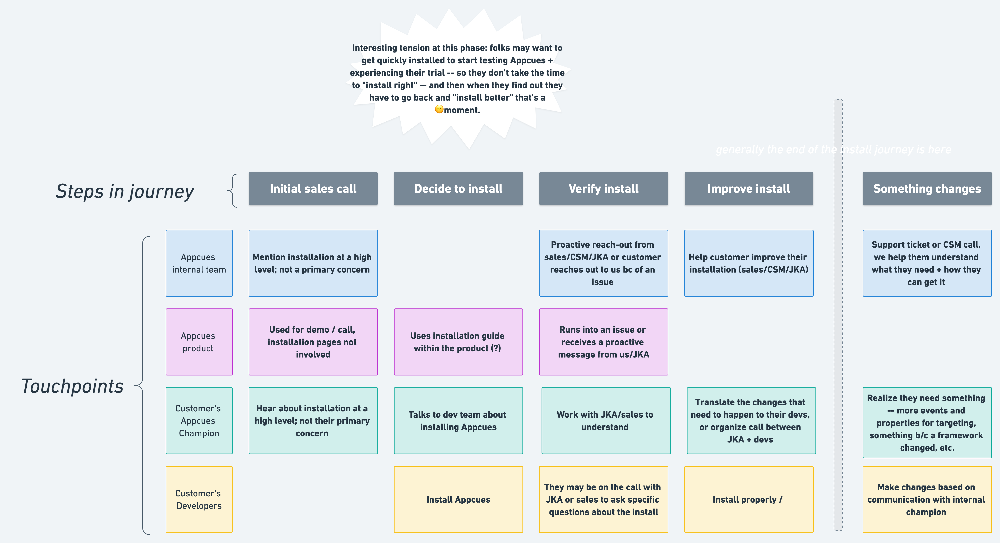
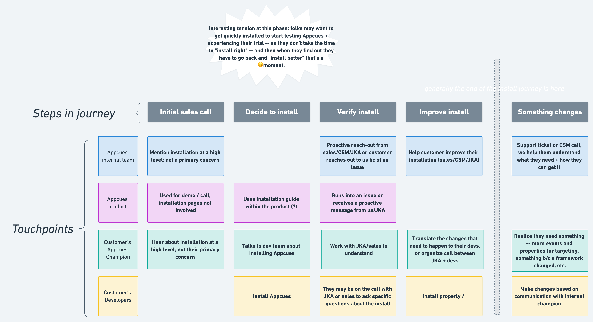

a bit of background
Appcues is a tool for building onboarding, feature announcements, surveys, and other experiences right on top of a product without writing any code.
In order to publish the content they build to their end uers, our customers need to install Appcues. Installing is a prerequisite for making the most of Appcues, but our instructions were causing a lot of confusion and unhappiness for our customers, not to mention our own customer success and support teams.
 
